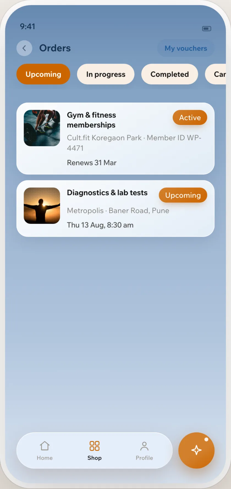

Discover
(Case study · AI product)
I built an AI assistant that makes employee benefits easier to use.
A conversational layer over WorkPerks that helps employees discover, understand and act on their benefits, designed, built and tested end to end.
The prototype’s own tools and renderer, running in this page
An assistant inside a corporate benefits app. It finds, explains, reads what you hold, and takes you to the screen where you act.
Understand
A policy, in the app’s own words.
Act
It ends on the screen where you act.

(Why I built it)
Thirty-five benefits across ten catalogues, each with its own vendors and rules, plus flexi benefits, Reward rupees, Health Coins and which wallet pays. To book or buy anything, an employee first had to find the right benefit, then work out how it is funded.
The problem wasn’t a lack of benefits. It was the effort required to use them.
(The usual way)(With the assistant)
Employees don’t think in navigation structures. They think in questions.
Need · Search · Navigate · Understand · Check eligibility · Find benefit · Redeem
- Need
- Search
- Navigate
- UnderstandAsk
- Check eligibility
- Find benefitUnderstand
- RedeemAct
Every one of these lives somewhere different in the app.In the assistant, they all start in the same place.
(Conversational design)
Designing the conversation, not just the chat UI.
The interface was only one part of the experience. I had to design how the assistant understands intent, responds, guides the user and moves the conversation forward.
- Understand intent“How much do I have left?”
- Answer, then action“Can you cancel my gym booking?”
- Structure the answer“Tell me about Gym & fitness memberships”
- Intent
- Context
- Response
- Action
The first two routes are worked out live by the app’s keyword layer in this page; in the app, the AI does this step. The third runs the benefit tool directly. The app screens are recorded from the employee app.
Natural language
People don’t ask the same way twice.
Each phrasing in turn. The tool and its arguments are the real route, worked out in this page.
get_balance currency: coins
2,750 coins
Same intent, same tool, same answer.
get_balance currency: ?
“Which balance do you mean?”
No currency named, so it asks rather than guess.
This page runs the app’s keyword backup. In the app the AI reads the question first.
Situations, not product names
What the AI made of four everyday sentences.
cough that won’t go away, don’t want a waiting room
Doctor consultationsRighttrying to give up cigarettes for months
Health programmes & assessmentsRighttablets every day for my blood pressure
Pharmacy & medical suppliesRightsleeping badly, running on empty
Digital challengesWrong: Employee Assistance Programme
The benefit each answer led with, in the recorded run behind the result in Testing: 18 of 20 situations reached the right benefit with the AI, 3 of 20 with keyword search alone.
Context
Context is carried by design, not by memory.
The AI sees the employee’s earlier questions, never its own earlier answers: those are built from balances and orders. So every follow-up it offers is a whole question that works on its own.
- Message 01 · sets the scene
What can I get?
Five benefits come back, with follow-ups to tap. - Message 02 · one tap on a follow-up
Tell me about Gym & fitness memberships
A complete question, not “tell me more”. - What the AI is sent
userWhat can I get?
assistant[previous answer omitted]
userTell me about Gym & fitness memberships
Built on the server, on every turn.
Clarity over AI-sounding language
Three answers I rewrote after testing.
Each is recorded in the code, with the question that exposed it.
-
hi
I didn’t quite follow that.
I can find a benefit, explain one, tell you what you’ve booked, your balance, or anything about gift vouchers.
What can I get?What have I booked?What vouchers do I have?
A greeting isn’t a misunderstanding, and that was the first line of the conversation.
-
how do I claim this back
I can’t do claiming expenses back myself — I can explain anything and take you to where it happens.
No button followed.
When there’s no screen to offer
I can’t do claiming expenses back myself, and there is no screen in this app for it. I can explain how it works, or find you something else.
It promised a screen it couldn’t show. Now the promise only comes with a button, and without one it says so.
-
can I get a Bata voucher
You can purchase a Bata voucher, which is redeemable in store only. Your voucher code will be masked once you complete the…
No price, value or discount.
Yes — Bata is available at price, redeemed where.
ValueRedeemedIn stock
Where can I use my Bata voucher?
Prose lost the facts. Figures now sit in rows, filled live from the supplier, which the AI’s phrasing never touches.
The assistant’s voice
Written into its rules, not a brand deck.
- Concise
- “Keep sentences short.”
- Direct
- “Three to five results, best first.”
- Helpful
- “Say what it costs and who provides it.”
- Contextual
- “If the person names a brand or a benefit, answer about THAT one.”
- Human
- “Name the specific thing” it can’t do, and never “say you have done something.”
- Action-oriented
- “Offer the screen where they can act.”
In its own words
Each trait is a line from the instructions the AI runs with.
Concise · direct
Helpful · action-oriented
Contextual · human
Conversational design became the bridge between what users wanted to say and what the product could actually do.
How I designed the intelligence behind it↓(The AI and the application)
The AI understands. The application decides.
- The question
Can you cancel my gym booking?
In the employee’s words, sent with what the app already knows: benefits, balances, orders and its screens.
- AI router
cannot_dothing: cancel my gym booking
screen: ordersOne call. The model reads the sentence and returns the name of a tool. Never a fact.
- ToolNames what it can’t doand checks the screen exists
Ordinary code, one per kind of question. Each returns data, or the reason there is none.
- Application dataYour ordersa screen the app confirmed it has
The app’s own data, or the voucher supplier’s API through a small proxy.
- Response
I can’t do cancelling your gym booking myself — I can explain anything and take you to where it happens.
Your ordersBuilt by the app, in code. Every button goes to a screen the app confirmed it has.
In the app the model fills in the tool’s arguments; the ones shown are what this page’s keyword layer produces for the same question.
(The AI)
Understands, routes, and nothing more.
- Understands what the employee means
- Routes the question to a tool
- Optionally phrases one sentence, thrown away if it gets a fact wrong
(The application)
Owns the data, the rules and every answer.
- Owns the employee’s data and the business rules
- Owns transactions: the assistant has none
- Masks voucher codes and strips personal details before the AI sees anything
- Builds every answer the employee sees
Tools
Thirteen tools, one per kind of question.
The AI chooses a tool; the app builds the answer. Booking, buying and cancelling were never written as tools.
- Find something
search_benefitsbenefit_detailexplain- Balances
get_balanceget_wallet- What you hold
my_orderslist_my_vouchers- Gift vouchers
search_vouchersvoucher_storesvouchers_near- The app itself
open_screenabout_appcannot_do
Data boundary
The model doesn’t need to see everything.
Only the question crosses to the AI, with emails and long digit runs stripped on the server. Balances, orders and voucher codes stay in the app.
- The key would ship in the page. Requests need AES-256-CBC encryption. Doing it in the browser hands the key to anyone with developer tools.
- The IP is allowlisted. The supplier rejects unrecognised origins. A browser calls from whatever network the employee is on.
- CORS is closed. No cross-origin headers, so the request would be blocked even if the first two were solved.
Three reasons the supplier’s API couldn’t be called from the browser, so a small Node proxy holds both logins, does the encryption and offers four read-only routes. Issuing a voucher is the supplier’s only write, and no tool the assistant has points at it. Codes are masked inside the tool: four characters on a long code, two on a short PIN.
When the AI is unavailable
Four steps down, and the last one still answers.
A used-up quota and a model retired mid-project both happened in testing.
- Retry the same modelA rate limit or timeout. A slower answer: it waits as long as the provider asks.
- Try the second modelThe first is gone or retired. The same answer, no waiting.
- Keyword rulesEvery model failed. A correct but narrower answer, still from live data.
- Helpful fallbackNothing recognised the question. Live benefits as rows and a way to browse, never a flat failure.
Designing AI behaviour
What it may decide, and what it may not.
- What it understands
- Questions about benefits, balances, orders, gift vouchers and the app itself.
- What it can do
- Find, explain, read what you hold, and open the screen where you act.
- What it cannot do
- Book, buy, cancel or change a declaration. Those tools were never written.
- What it never does
- Show a full voucher code, add rupees to coins, invent an address, or answer from memory.
- How it recovers
- Four steps down when the AI is unavailable, and the last one still answers from live data.
(Building with AI)
Design, prompt, code, run, test, break, iterate: the same loop, every day, for three weeks.
I didn’t hand the design off to engineering. I built the system I was designing.
Before
- Design
- Build
After
- Design
- Build
- Test
- Audit
- Break
- Improve
3
specification revisions in three weeks, each rewritten against what the live systems returned.
18→8
tools the first spec asked for. Reading the database first showed ten already existed, so eight needed building.
9
defects found by a separate agent auditing the build against the spec.
(What I brought)
The architecture, the rules it cannot break, reading the live schema before specifying against it, and reversing on evidence: the spec had it issuing vouchers, until three of six orders arrived under the wrong brand.
(What Claude Code brought)
The code, from the React screen to the proxy and the test suite, and the documents. A respecification in the morning came back running the same day.
Not to prove it worked. To check it behaved the way I decided it should.
(Testing the AI)
268
scenarios, generated from the live catalogue rather than written by hand.
Rules held
261/268
ended in a real answer with none of eleven automated rules broken. Five of the seven left are correct refusals.
AI against keywords
18/20
situation questions reached the right benefit with the AI, against 3 of 20 for keyword search. Measured once, on 1 September.
The 268, by kind of question
(Real-world discoveries)
Six supplier behaviours the integration guide doesn’t document, found by running the integration on the account I had access to.
Reality doesn’t behave like documentation.
ExpectedA non-zero code means the order failed.
ActualThe order was queued, not rejected. Reissuing it buys a second voucher.
DecisionPoll the status. Never retry.
Expected“Inactive product” means rejected, as the vendor’s catalogue says.
ActualIt comes back again and again while an order is still settling.
DecisionRead it as pending.
ExpectedOrders settle the same way each time.
ActualFour took eighty to a hundred seconds. The fifth returned at once.
DecisionThree states, pending, issued and failed, and keep the order id.
ExpectedStock goes down after a purchase.
ActualEvery brand reported the same stock afterwards.
DecisionStock never confirms or fails a purchase.
ExpectedThe brand delivered is the brand ordered.
ActualThree of six orders arrived under a different brand.
DecisionCheck, warn with both names, and hand off instead of buying.
ExpectedPublished store addresses are usable.
ActualThey don’t resolve to real locations.
DecisionName the town, never an address.
(What I learned)
What I learned
AI UX is behaviour design.
The screen was the easy part. The work was deciding what the AI may decide, when it says no, and how a no still helps.
The model shouldn’t own the product.
It picks a tool. Facts, rules and every word of a refusal belong to the app, which is why an outage degrades the assistant instead of breaking it.
Building showed me what a static design couldn’t.
Reading the live database first turned a spec for eighteen tools into eight. Three of six voucher orders arriving under the wrong brand reversed the plan to issue vouchers. Six supplier behaviours weren’t in the guide, and acting on one as documented would have bought a second voucher.
Building became faster. Verification became harder.
A respecification in the morning ran the same day. Finding out what was actually true, of the database, the supplier and my own decisions, did not speed up. The bottleneck shifted from writing code to verifying reality.
Fallbacks are part of the experience.
The provider failing turned out more common than our own bugs: a used-up quota, and a model retired mid-project. The last rung still answers from live data.
AI coding expanded my role as a designer.
I owned the spec, the architecture, the rules and the standard for accepting a build, and Claude Code turned each decision into running code.
AI coding tools didn’t replace the design process for me. They expanded the part of the product I could personally take ownership of.
(Live prototype)
Try the assistant yourself.
The prototype’s own tools, renderer and catalogue: 35 benefits (27 switched on for this employee), a wallet and eight past orders. The AI can’t run in a static page, so typing is matched by the app’s keyword backup layer.